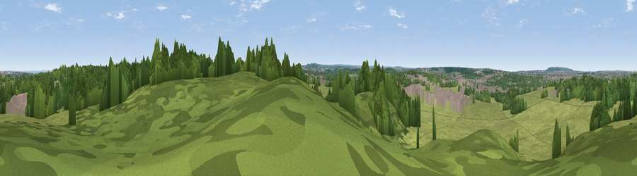

Viewpoint near Upper Ruxley
#43623 in England · top 69% of its area beats it · near Upper Ruxley · path 83 mWhere it is
The exact computed spot (TQ 49375 70925). Click the marker for map links.
Public access: the nearest public right of way is about 83 m away — the final stretch may cross private land. Computed from Natural England's CRoW access layer and OpenStreetMap rights of way — not the legal definitive map. Always verify locally.
The view, rendered

A 360° render of this exact spot computed from the terrain model, tree cover and land cover — summer colours, afternoon light, calibrated against photographs of famous viewpoints. Real trees, hedges and buildings will differ in detail.
The panorama
Grey silhouette: terrain skyline in each direction (720 bearings, Earth curvature and refraction included). Dashed green: skyline with trees (+15 m) and buildings (+8 m) as obstacles. Blue strip: how far the ground is visible on each bearing.
Where the view opens
Wedge length = distance to the farthest visible ground on that bearing (vegetation-aware). Rings at 10, 25 and 50 km.
What fills the view
45% woodland · 44% grassland · 10% built-up · 2% cropland
Angular shares of the visible panorama (visual magnitude), not map area. Landscape diversity 0.44 (0–1 Shannon).
Key numbers
More beautiful places nearby
The staircase of upgrades: each row has a higher view potential than everything closer. Driving times are estimates from straight-line distance, calibrated against real road routing — check an actual route before setting out.
| Place | Direction | Drive | Score |
|---|---|---|---|
| Viewpoint near Hextable | E · 3 km | ~7 min | 37.6 |
| Viewpoint near Farningham | SE · 8 km | ~16 min | 39.1 |
| Viewpoint near Shoreham | SSE · 10 km | ~20 min | 40.2 |
| Viewpoint near Ebbsfleet Valley | E · 11 km | ~20 min | 41.1 |
| Viewpoint near Brasted | SSW · 15 km | ~26 min | 42.6 |
| Viewpoint near Wrotham | SE · 15 km | ~27 min | 43.9 |
| Viewpoint near Wrotham | SE · 15 km | ~28 min | 53.6 |
| Viewpoint near Wrotham | SE · 16 km | ~29 min | 54.4 |
51.41767, 0.14677 · source: screening · position refined by local search. Computed location — check access rights before visiting.